Mihamacho, Mie: things to do, food and stays
Mihamacho · Mie
Mihamacho
Highlighted on the Mie map.

Stay
フェアフィールド･バイ･マリオット･三重熊野古道みはま

Feafirudo Feafirudo Bai Bai Mariotto Mariotto Mie Kumano Kodo Mihama
阿田和の宿
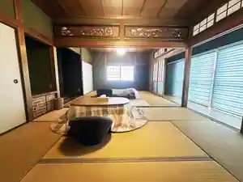
A Tawa No Yado
フェアフィールド・バイ・マリオット・三重熊野古道みはま
Feafirudo Bai Mariotto Mie Kumano Kodo Mihama
kakiha
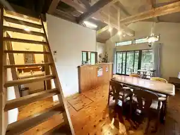
kakiha
ウェルカムハウス
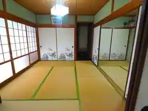
Uerukamu House
ＭｉｋａｎＨｏｔｅｌ
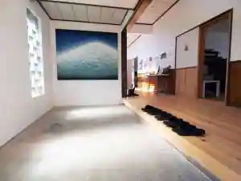
MikanHotel
Inn in Ueno, Mihamacho with one group per day.
星空とさぎりの宿
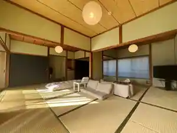
Hoshizora Tosagirino Yado
Dining
さぎり茶屋

Sagiri Chaya
道の駅 パーク七里御浜
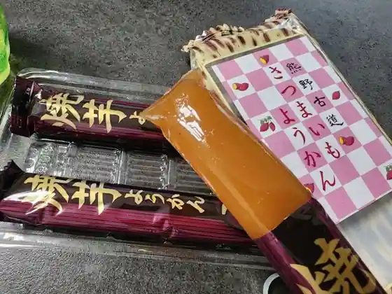
Michi No Eki Park Shichiri Mihama
パスタ こむぎこ
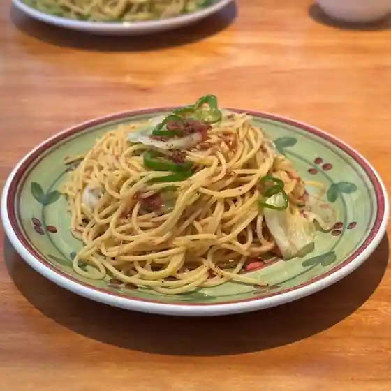
Pasta Komugiko
こいし亭手打ちうどん
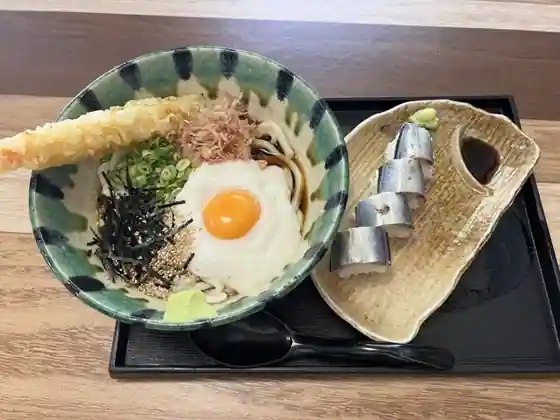
Koishi Tei Teuchi Chiudon
フェアフィールド・バイ・マリオット 三重御浜
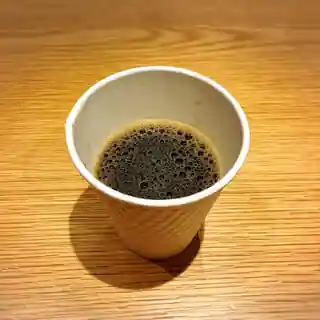
Feafirudo Bai Mariotto Mie Mihama
大石家
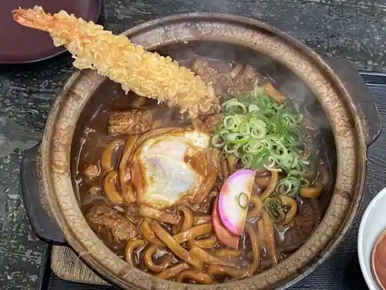
Oishi Ie
カフェ&寿司バル じぇしーおじさん
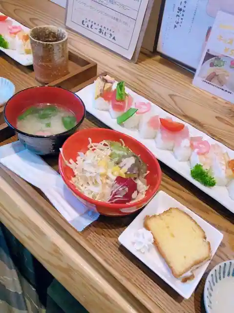
Cafe & Sushi Baru Jieshiojisan
つじマルシェ
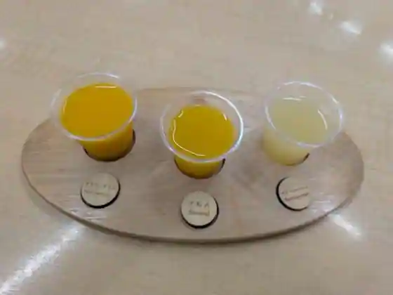
Tsuji Marushie
ぐうちょきぱん
Guchokipan
御浜Blues Cafe
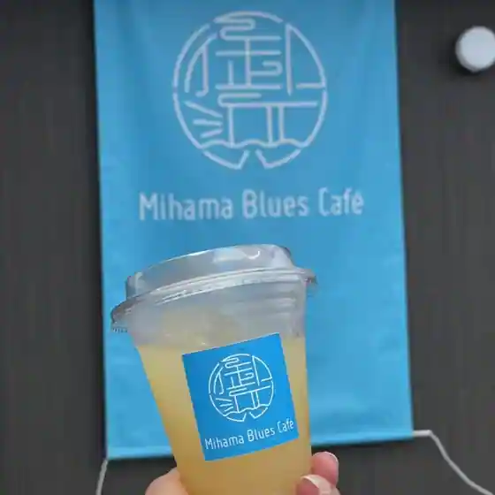
Mihama Blues Cafe
中華ごはん 旬彩
Chuka Ko Han Jun Sai
饂飩 天青月
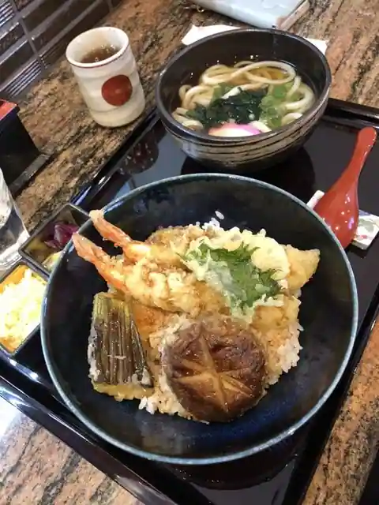
Udon Tensei Gatsu
麺酒場 弁慶
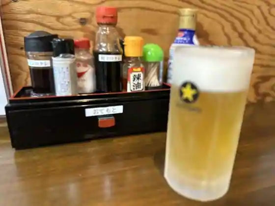
Men Sakaba Benkei
麵屋 植月
Men Ya Uetsuki
焼肉華炎
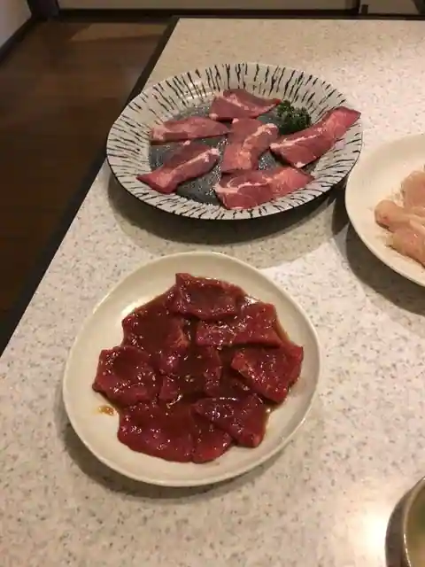
Yakiniku Hana Hono
bakeshop aduki
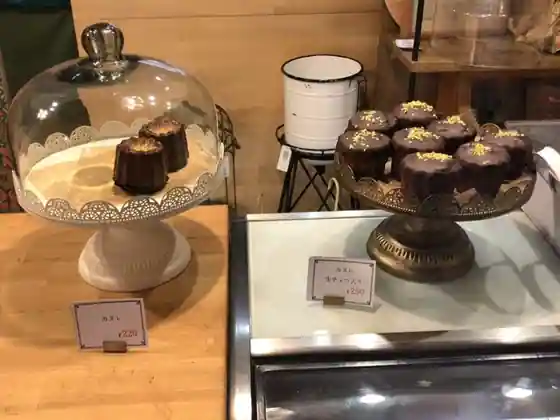
bakeshop aduki
カシュカシュ
Kashukashu
寿し文
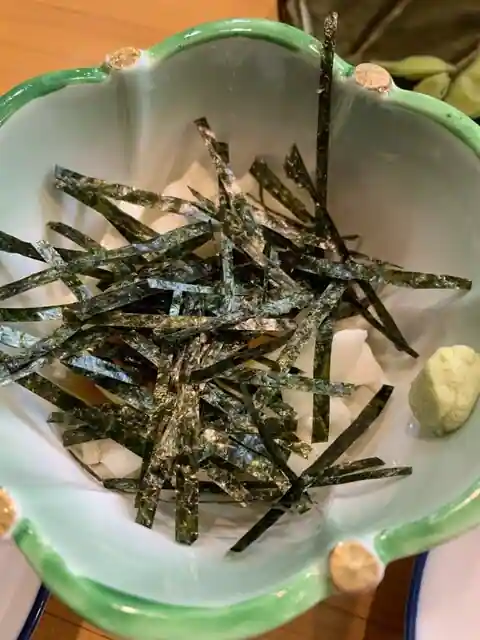
Hisashi Shi Bun
S-Cafe
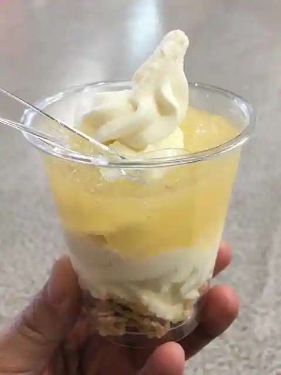
S-Cafe
すぎもと農園
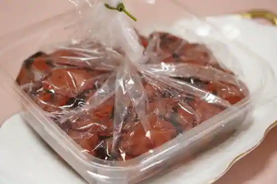
Sugimoto Noen
cafe茶和
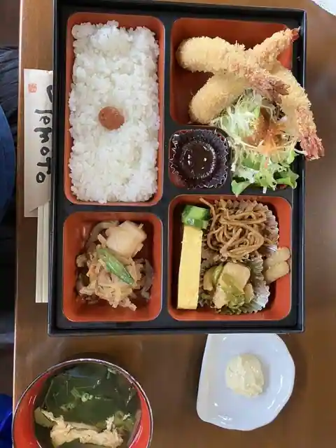
cafe Cha Wa
創作レストラン 日和
Sosaku Restaurant Hiyori
パーク七里ノエル
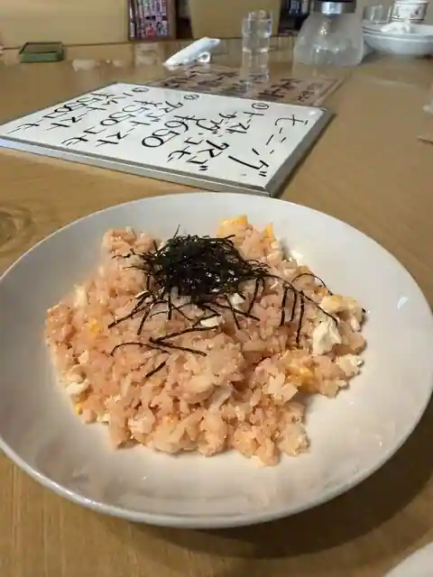
Park Shichiri Noeru
Sights
Shichiri Mihamacho Fureai Beach

Roadside Station (Park Shichiri Mihamacho)

A Tawa Shrine
Hitsujimikan Ranch
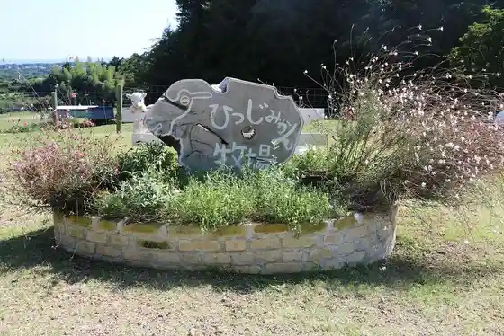
Fudo Falls
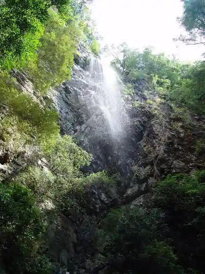
Genchi Shrine
Mihamacho Teratani General Park
Yoko Kaki Toge (Kumano Kodo Ise Michi)
Kaze Den Toge (Kumano Kodo Ise Michi)
Momotaro Iwa
Mihamacho Chuo Kominkan
Hiki Saku no Dai Kusu
Ichiki no Ibuki
Kamiki no Inumaki